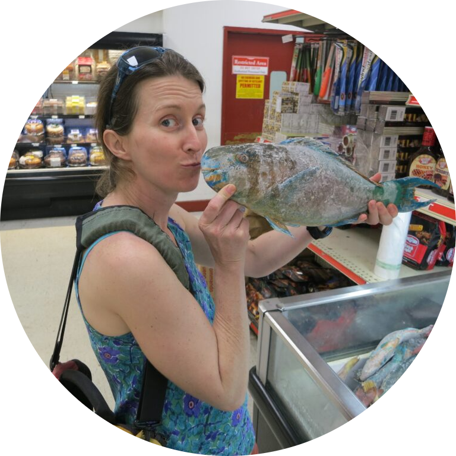
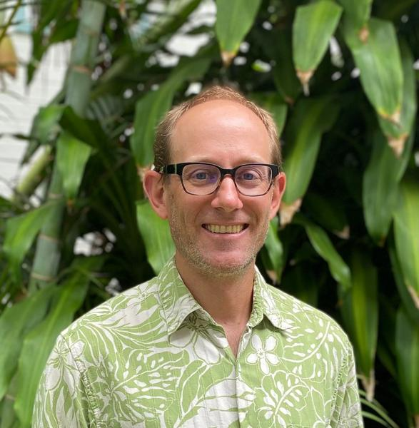
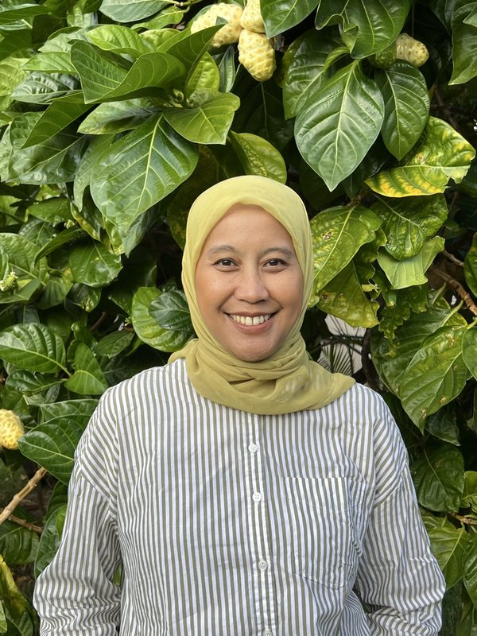
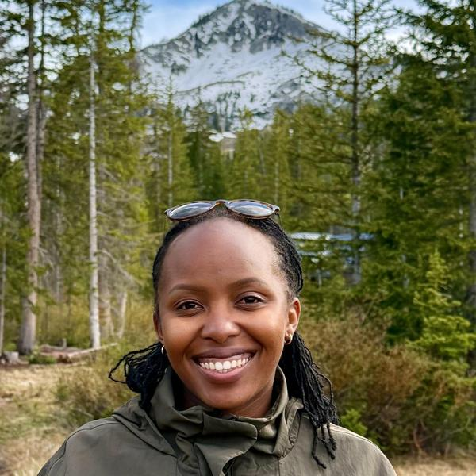
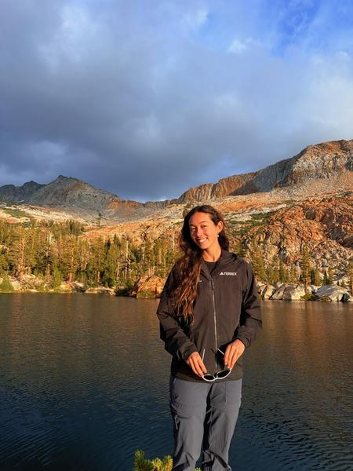
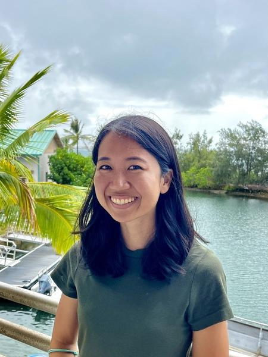

About
We are a diverse and interdisciplinary group interested in developing management-relevant analyses and tools. We focus on natural resource and environmental management problems spanning the mountain top to the coral reef. We employ a multitude of approaches, from quantification and valuation of ecosystem goods and services, data-driven and participatory modeling, value chain analysis, alternative economic welfare indicators, policy analysis, and decision science.
Principal Investigator

Kirsten Oleson
I am an interdisciplinary sustainability scientist. My overarching goal is to ensure that the value of nature is captured in national, state, and community decision-making. I employ tools from economics, social science, ecology, and decision analysis to provide rigorous foundations for discussions of what trade-offs societies are willing to make in the name of increasing short-term economic productivity. I engage with national and state policy makers and local communities over a wide range of resource management, economic development, and conservation issues that are of direct and urgent relevance to the state of Hawaiʻi and other Pacific Islands, such as food security, climate adaptation, and sustainable economic growth. I teach the graduate core courses, as well as a graduate policy analysis class. I serve on numerous advisory committees, including for the United Nations Global Coral Reef Fund, The United Nations System of Environmental and Economic Accounts Ocean Accounts working group, the Global Ocean Accounting Partnership, the Hawaiʻi Division of Aquatic Resources Holomua, and Blue Forests. I was confirmed to the City and County of Honolulu Climate Change Commission in 2024. In 2021, I was awarded a Pew Marine Conservation Fellowship.
- GoogleScholar
- Position: Professor
- Email: koleson@hawaii.edu
Collaborators

Xiurou Wu
I am currently an Assistant Professor in the Department of Natural Resources and Environmental Management at University of Hawaiʻi at Mānoa. My research builds micro-foundations for conservation and sustainable resource management in aquatic ecosystems,focusing on how human activities affect both ecosystem health and resource-dependent communities under climate change pressures. Through interdisciplinary methodological approaches combining econometrics, mathematical programming, dynamic optimization, and spatial analysis, I contribute to the advancement of natural resource management through research on sustainable use practices and climate adaptation strategies across varying levels of data availability.
- Website
- Position: Assistant Professor
- Email: xiurouwu@hawaii.edu
Ashley Lowe Mackenzie
I am an environmental economist passionate about integrating the benefits of functioning ecosystems into policy decisions to support effective conservation efforts.
Iʻm interested in everything in the JEL classication Q in ranking order:
- 1.Q5 (I mean you canʻt go wrong with Q51, Q54, Q57, or Q56 and lets not forget Q52 and Q53!).
- 2.Q2 ( I am a die hard Q26 stan, but who doesnʻt love Q23,Q24, Q25, and Q22).
- 3.Q1 (obviously Q15,Q16 and Q18)
- 4.Q4 (We all know how important Q47, Q42, and 41 are gonna be given Q54)
- 5.Q3 (and then lastly Q33, Q34 and Q32 because isnʻt that the consquence of what we are living through now)
- Website
- Position: Assistant Professor
- Email: alowemac@hawaii.edu
Yinphan Tsang
Dr. Yinphan Tsang is an trained hydrologist and ecological modeler with a passion for connecting hydrology and ecosystems through multidisciplinary science. Her research explores how surface and subsurface water processes influence stream and river ecosystems, drawing on field data, statistical approaches, and predictive modeling to uncover the interactions between water, landscapes, and life.

Elliott Parsons
Dr. Elliott Parsons is an Assistant Specialist with the University of Hawaiʻi at Mānoa Sea Grant College Program and the Pacific RISCC Specialist for the Pacific Regional Invasive Species and Climate Change (Pacific RISCC) Management Network. He has more than 15 years of experience in conservation, invasive species management, climate adaptation, and applied research across Hawaiʻi and the Pacific. Elliott previously served with the Hawaiʻi DLNR Division of Forestry and Wildlife and the Three Mountain Alliance watershed partnership, where he led landscape-scale conservation and restoration initiatives on Hawaiʻi Island.
Postdoctoral Researchers

Andini Desita Ekaputri (Sita)
I am a social scientist working in the intersection of environmental governance and community wellbeing. My research focuses on how sustainability interventions shape equity, and well-being among local communities. Currently, as a Postdoctoral Researcher in the Oleson Ecological Economics Lab at the University of Hawaiʻi at Mānoa, I extend this work to nature-based solutions (NbS), where I contribute in co-developing InEvalTool, an integrative evaluation toolkit assessing NbS across physical, ecological, social, cultural, and economic dimensions in Hawaiʻi. My focus within this project is assessing social outcomes from nature-based solutions performance specifically related to flood risk by working closely with community organizations to understand flood preparedness needs and community-level outcomes.
Sam Tucker
Sam has a PhD in Economics from Michigan State University. His dissertation focuses on efficiency issues in environmental markets with imperfect credit design, as well as equity concerns from the spatial redistribution of ecosystem services. He is currently working in the Oleson lab as a researcher in Non-Market Valuation
PhD students
Louis Chua
Louis is a PhD Candidate in the Department of Natural Resources and Environmental Management (NREM) at University of Hawai'i at Mānoa. He is currently working on Natural Capital Accounting (NCA) and ecosystem valuation projects across the Main Hawaiian Islands.

Ann Kwamboka Nyambega
Ann’s research focuses on evaluating nature-based solutions and understanding how resilience benefits are measured, valued, and incorporated into public investment decisions. She is particularly interested in community-engaged approaches to resilience that bring ecological, cultural, and economic perspectives into decision-making.
Masters of Environmental Management

Sophie Bekins
I'm a graduate student in the Master of Environmental Management program, focusing on conservation education, ʻāina-based learning, and partnerships between conservation organizations and K–12 schools. My current capstone research examines best practices for developing effective, long-term collaborations that support environmental stewardship, sense of place, and kuleana among students.
Students/RAs
Micaiah Cape

Kacie Kajihara
Aloha! I am a Marine Biology PhD student working on a Sea Grant project studying Nature based Solutions in Hawaiian fishponds.
Elanur Ural
Ela is a PhD student of Economics at University of Hawai'i at Mānoa. Her research focuses primarily on fisheries, resources, and public economics. She works under the Oleson Lab's coastal ecosystem accounting team on the valuation of fisheries for the main Hawaiian islands.
Henry Behr
Arushi Khare
Skills
Necessitatibus eius consequatur ex aliquid fuga eum quidem sint consectetur velit
Statistics
Quantifiable Indicators
Papers
Projects
Past Students
Currnet students
Testimonials
Necessitatibus eius consequatur ex aliquid fuga eum quidem sint consectetur velit

Saul Goodman
Ceo & Founder
Proin iaculis purus consequat sem cure digni ssim donec porttitora entum suscipit rhoncus. Accusantium quam, ultricies eget id, aliquam eget nibh et. Maecen aliquam, risus at semper.

Sara Wilsson
Designer
Export tempor illum tamen malis malis eram quae irure esse labore quem cillum quid cillum eram malis quorum velit fore eram velit sunt aliqua noster fugiat irure amet legam anim culpa.

Jena Karlis
Store Owner
Enim nisi quem export duis labore cillum quae magna enim sint quorum nulla quem veniam duis minim tempor labore quem eram duis noster aute amet eram fore quis sint minim.

Matt Brandon
Freelancer
Fugiat enim eram quae cillum dolore dolor amet nulla culpa multos export minim fugiat minim velit minim dolor enim duis veniam ipsum anim magna sunt elit fore quem dolore labore illum veniam.

John Larson
Entrepreneur
Quis quorum aliqua sint quem legam fore sunt eram irure aliqua veniam tempor noster veniam enim culpa labore duis sunt culpa nulla illum cillum fugiat legam esse veniam culpa fore nisi cillum quid.